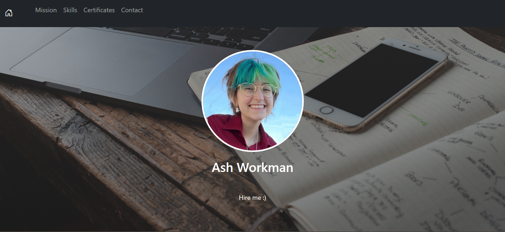

Personal Website
Overview
In my sophomore year of college, I took the Web Development track of the Global Tech Program. The Global Tech Program focused on three factors: authentic experiences, applied learning, and intercultural communication training.
The first half of this experience also consisted of a long-term project throughout part of the course. The prompt of this project was to make a personal website using HTML, CSS, and Bootstrap on Replit. The project was created from scratch and was also required to contain certain sections including header, mission, skills, certificates, and contact, all with responsive web design.
Tools
Over the course of this project, the tools used were
- HTML
- CSS
- Bootstrap
- Replit
My Role
This was an individual project, so I assumed the following roles:
- Website Designer
- UX Specialist
- Front-End Developer
Problem
This project took place over the course of about a week and a half, which was a very quick turnover considering it was built completely from scratch and I had responsibilities in other classes as well.
Because of this quick timeline, any issues in debugging must've been solved as quickly as possible. However, I was running into many issues with my code and simply did not have the time to stop and wait for a reply from a facilitator when running into any roadblocks or problems.
Solution
In order to solve this issue, I used the resources I was provided to attend multiple office hours sessions. Putting my pride aside, I was able to have one-to-one conversations with teachers in order to fix the issues I had with my code. Additionally, attending office hours was the most effective solution due to its time efficiency; moreover, there is no delay in responses and I am able to address issues head-on by sharing my screen to look at the entirety of my code at once.
Results
View the final website here.
Next Steps
Though this project has come to a close, next steps I would take if given the chance would be improving the design and adding more content. While I am happy with the final results, improving these two factors could have massively improved the impact of this website.
In terms of the design, the two biggest things that could use improvements is the photo resizing and the navbar. The photo issues are especially present in the Skills section of the website, where it is easy to tell that some of the logos used are too zoomed in that during their resizing to a circle, parts of the logo got cut off. In other cases, such as the Adobe Creative Cloud picture, it actually needs to be oppositely scaled, as it is easy to tell in the top and bottom of the circle that a little adjusting could have monumentally changed the appearance of the circle. As for the navbar, the home icon does not have the same spacing to match with the rest of navbar, which was caused due to its responsive design to switch to a hamburger menu when meeting sizing criteria, but I wish I could adjust it slightly so it matches the other buttons in its expanded size
Additionally, adding more content to this website would also help this project overall. It feels as if it is lacking with only being one page with small sections, so perhaps it could have benefitted with multiple pages to give the website a feeling as an actual website and not just an online page.
Learnings
In conclusion, this project taught me a lot about HTML, CSS, responsive web design, and project management. This was one of the first major times building a website I felt confident enough to show, and it taught me a lot about the amount of work that goes into even one page and how important it is to get ahead of any problems that can arise by communicating with others and not being afraid to ask for help. The project received a 100% and helped me earn an A+ in the class, which did not only strengthen my grades but also the skills I can use in future opportunities.